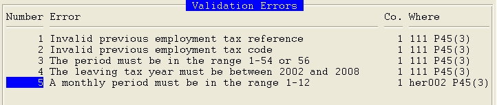

Choosing the Complete option will validate the content of the return. If there are errors, you will be shown where they have occurred (see screen shot below).

Each error then needs to be resolved by updating the relevant form for the employee indicated in the ?Where? column (see Form Details). Pressing RETURN on an error notification line will display the relevant form in update mode so that the error can be corrected. Once all errors have been resolved, the option to complete should be run again.
If you leave the list of validation errors, you can return to it using the Validation Errors option on the pop-up menu. This will display the list as before; it will not reflect any changes since the Complete option was last used. To refresh the list (clearing any errors which have now been resolved), select Complete, and any unresolved errors will be displayed.
You can choose to ignore errors with the F6 option. This would only be appropriate in a live submission if the validation rules in your version of the workbench are out of step with current HMRC rules.
Guidance can be found on the HMRC website, for example, to help avoid the common issues:
http://www.hmrc.gov.uk/paye/onlinefiling-understanding.htm#7 .